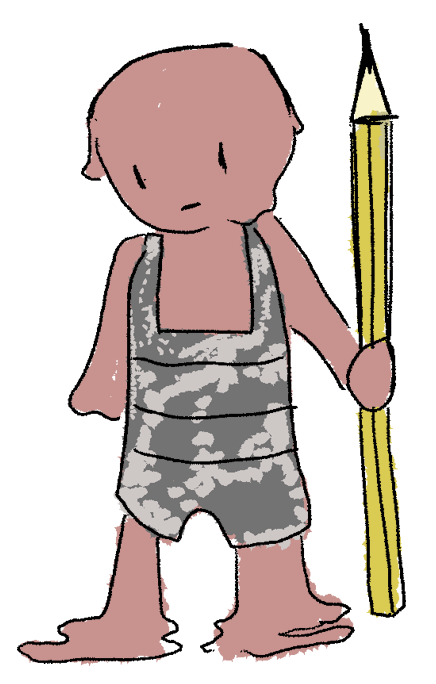

There's no use for many items that have been thrown out into the garbage, is there? Well, you can always recycle them for a different purpose - a living being, for example.
Materials, minions of Curio, gather up garbage from all over the land and bring it back to their master. What isn't used by him for life form creation can be used to create intricate art pieces by the very few humans that Curio keeps by his side.
But citizens of the Death Domain, human and creature alike, all live in fear of being picked apart by their ruler - his nimble fingers are always eager to destroy and recreate. Nobody is safe from that.
So Materials aren't taught to value life, instead they are supposed to put the miracle of creation above their pathetic existance. Only most prominent and valuable ones even have names.
When injured, they can replenish themselves by consuming the same substance they are made up of - cannibalism, but rather adorable!